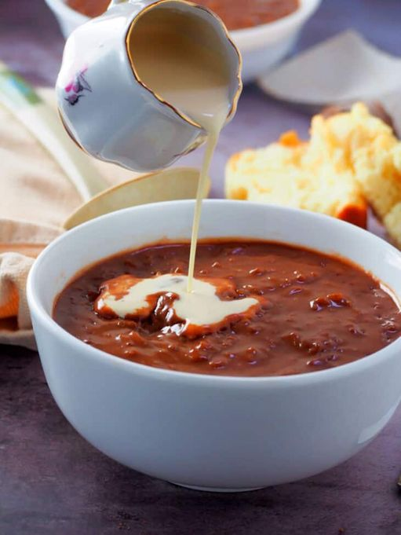

Champorado

Description
Champorado is a rice porridge with a very sweet chocolate flavor. It's usually served as a breakfast for kids.
Ingredients
- 5 cups water
- 1 cup glutinous rice
- 4 pieces tablea chocolate
- 1/2 cup sugar
- 1/2 cup evaporated milk
Steps
- In a deep pot over medium heat, add water and bring to a boil.
- Add rice and stir to distribute. Lower heat and continue to cook, stirring occasionally, until rice begins to expand.
- Add tablea and cook, stirring regularly, until chocolate has melted. Continue to cook until rice is translucent and liquid is reduced to desired consistency.
- Add sugar and continue to cook, stirring regularly, until dissolved.
- Ladle onto bowls, drizzle with evaporated milk and serve hot.